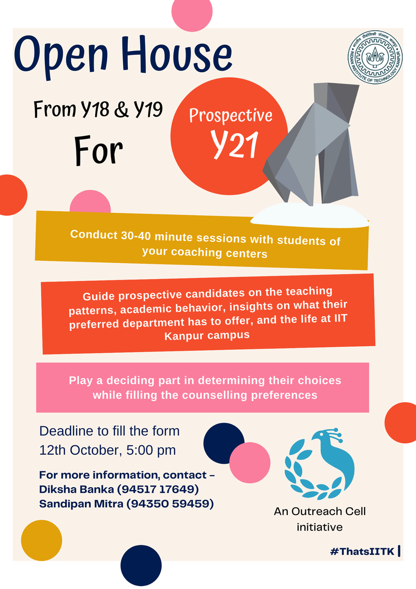
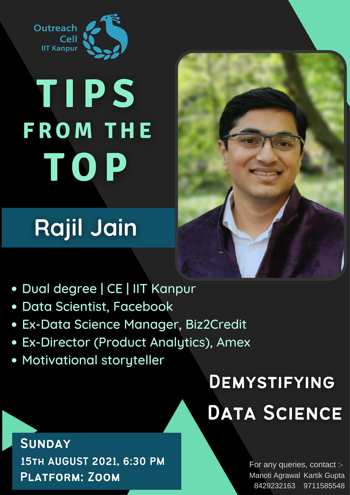

Career Choices

[For Y18 and Y19 students] Greetings from the Outreach Cell, IIT
Kanpur! With a fresh counselling season knocking on our doors, we have
a new batch of students ready to take on one of the most
experience-driven journeys of their lives. Yes! We're talking about
the upcoming Y21 batch. IIT Kanpur has always believed in harmonious
and fulfilling campus culture, and our Campus Junta is like our second
family thus we always look out for each other, even before they become
part of this extended family. In the same spirit, we bring to you the
Open House Sessions. This event looks forward to make the upcoming
batch familiar with the academic culture of IIT Kanpur, and their
seniors will conduct 30-40 minute sessions in their respective
coaching centers and guide prospective candidates on the teaching
patterns, academic behavior, insights on what their preferred
department has to offer, and the life at IIT Kanpur campus. Since it
would be an interactive session, you would be addressing their
relevant doubts which in the future could play a deciding part in
determining their choices while filling the counselling preferences.
Please keep in mind that when you're in the session you would be the
voice and ears of IIT Kanpur, you can motivate students in ways that
can not only define their college and career, but also the reputation
of our institute. We hope to see your registrations in large numbers.
Tips from the Top

Dear All, Outreach Cell brings to you another amazing session
“Demystifying Data Science” from 'Tips from the Top', a series of
talks by prominent alumni of IIT Kanpur pioneering in their respective
fields. Data enthusiasts will have an opportunity to have one-on-one
interactions with the speaker and gain further insights into the
field. We have with us Rajil Jain, an extremely dedicated, hardworking
and with exemplary technical skills. He is currently working as a Data
scientist with Facebook. Join us in a fun-filled session where we'll
learn about various applications of Data science in various fields and
functions that he has worked upon in his 12-year journey as a Data
Scientist. He has a deep understanding of the market landscape. He
will tell about multiple analytics and data-related roles available in
the industry and how students and young professionals can prepare for
them. Get to know the recruitment process and specifics on what skills
that hiring leaders generally look for. He'll provide us with his
insight on how to excel in the field by telling us about the best
practices in Data science; skills, tools and techniques to master and
a lot more! Hoping to see you in large numbers!! About the Speaker-
Rajil Jain is a Y4 alum who did a Dual degree in civil engineering. He
has worked as a Data scientist for more than 12 years in various
industries. He is currently working as a Data scientist with Facebook.
In a past role, he has led the Data science division of NYC-based
Fintech (Biz2credit) and served as a director of card product
analytics at Amex.